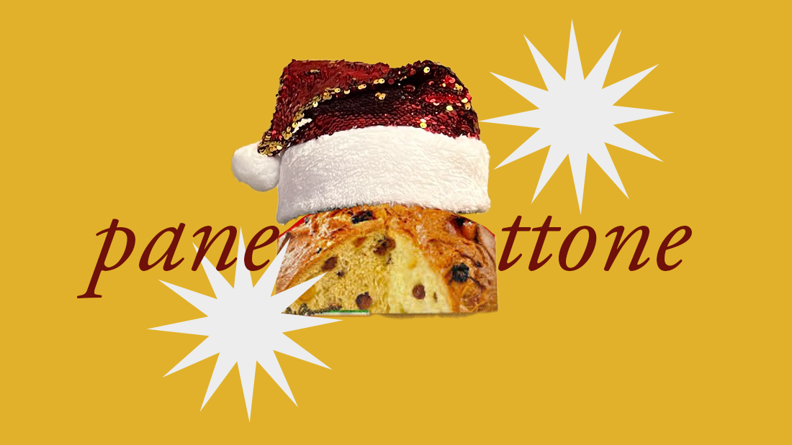

writing exploring food, the pandemic, and holiday traditions
tags: food, travel, family, holidays, tradition

Panettone, and its close cousin pandoro, is usually eaten during the holidays in Italy. It is less likely, and a bit odd, but not impossible, to find them outside of that time period.
I suppose I ought to mention that I first wrote this during the panorama. You know, the pandemonium. The panic. The panda panera express bread. The panettone.
The pandemic, for those of you who may not straddle that line between millennial and gen z.
I started falling in love with panettone when I had the opportunity to go abroad alone for the first time in my sophomore year of college. I was based in Milan, and had two very lovely host families. It was in January, just after the holidays, and I indulged in a rich, thick slice of the sweet bread as my breakfast, because I, like the Italians and unlike the Vietnamese and the Americans, prefer a sweet breakfast to a salty one. How to describe it? To call it a fruitcake would be a disgrace. It has bits of candied fruit in it, yes, but the texture of it is so soft and luscious, and yet incredibly light. Now, I’ve never actually had an American fruitcake so I can’t attest to it sitting heavy: my only experience with it is from a chapter book series I read called Junie B Jones, where Junie B disparaged it and therefore elementary school me, who only really knew of chè and not this foreign dessert, did too.
Anyway. I had the slice of panettone with a cup of tea, which I started having with no milk for the first time (a habit I wouldn’t properly enjoy until four years later, when I tried intermittent fasting and realized I needed something noncaloric to drink that wasn’t just water before I was allowed to eat, as I rose earlier than my diet allowed) because I didn’t really understand milk in Italy. It’s unpasteurized, or raw, so it didn’t have to be refrigerated. So it was kept out, and I know it was perfectly fine but to me it tasted sour, or at least tangy, and I kept imagining that it had gone bad even though everyone else in my host family was fine with drinking it. It was just strange to me, and obviously I never said anything about it, just chose to stop drinking it. Many Asians are lactose intolerant so I don’t think this was necessarily questioned, my nonpreference of milk, though actually I’m not. I love dairy. Once when I was little I was fully convinced I was allergic to cheese because I didn’t like it (I do now), but that’s another story.
Once when I was talking the streets of Milan a car driving by shouted something at me. I couldn’t quite make out what it was but I think it was ni hao, and I don’t think it was meant to be friendly. That’s hello in Chinese, which I am not. It sat as funny as the milk, because it was one of those things that didn’t really happen in America, at least not in the parts I was aware of. Not until later, anyway, did I learn about it.
When I came back from Italy I became obsessed with panettone and introduced it to my parents, who immediately found out a way to slowly but not purposefully wean me off this obsession by using a tried and true tactic: obliging me and finding it in bulk and for cheap in Costco. Costco, for the uninitiated, is a wholesale manufacturer; my love for it is wholesome and wholesale, too. So much of my childhood was chasing the rush in their walk-in freezer section or trying to figure out how to game the sample system or sitting in the shopping cart reading a book I picked from the area while my parents pushed me around as they shopped. And honestly, the brand we found there wasn’t terrible. It’s pretty good. I still eat it. But there was a period of three to five years after I first went to Italy that we would have half a dozen of these panettone boxes sitting atop our fridge, because the prices were low and the expiration dates were high. That became an invisible rule, too. Buying a panettone became part of the preparation for me coming home from college, and then from New York when I started work, and then from London when I went to grad school.
That’s how they show love, I guess. Food, and indulgence.
The context of the pandemic is important because it made me realize how much I value community, family, social interaction. A great part of the pandemic for me was based in a studio in Brooklyn. It was very much a shoebox. And while I was able to see some friends outdoors, and had a friend nearby that I was bubbling with so I could also see her and her partner indoors, there were many stretches of time in solitude and almost complete isolation. Which wasn’t so terrible, as an introvert and as a writer. I love spending time with myself, and I take myself on dates all the time. But sometimes it can get too much, realizing I got through the whole day without saying a single thing out loud. If I do something in a day and no one knows about it, do I even exist? It was a brutal confrontation with loneliness, and being ignored and forgotten, which are some of my greatest fears.
That year, I spent the holidays alone for the first time. Thanksgiving alone isn’t rare for me (sometimes I’ll do a friendsgiving or get invited over to a family meal, but most of the time Thanksgiving day could be alone) because it just wasn’t worth the flight to California from the East coast, when I would be doing the same in a month for the winter holidays. But I hadn’t ever really spent Christmas alone. I had tickets home, but then cases in California started rising and we decided it wasn’t worth the risk. I didn’t think this would be such a big deal. My family is part of a Buddhist sect but we’re not super religious, and we certainly aren’t Christian, so we never really subscribed to Christmas. We just did the commercial part, the gift giving, because we felt like it was an American tradition that we should do. Mostly it was nice to have the holidays off to spend time together. So I thought, it doesn’t really matter that I’m spending Christmas alone, because we don’t really care about it. There’s nothing important to us about it.
Except I was pretty deeply affected by it. Christmas Eve I took the subway to the Upper West Side and went to the Museum of Natural History, because I’d already gone to the Met twice by then and hadn’t been to that museum in a good while. That turned out to be a mistake because I forgot that a natural history museum, unlike an art museum, feels better to be experienced as a group, as a family. There were definitely a lot of kids about. And then after I biked through Central Park and walked through midtown for the first time since I was back in New York that summer after my original early-pandemic flight to the suburbs back home. I saw the Rockefeller tree and everything. Then I went home. And it was nice. But then the loneliness, like the cold, crept in.
I didn’t realize how much I equated the holidays with family until then, despite it not explicitly being a custom. I missed my family. I missed going to see the Christmas decorations that we’d never spend money on. I missed the panettone from Costco.